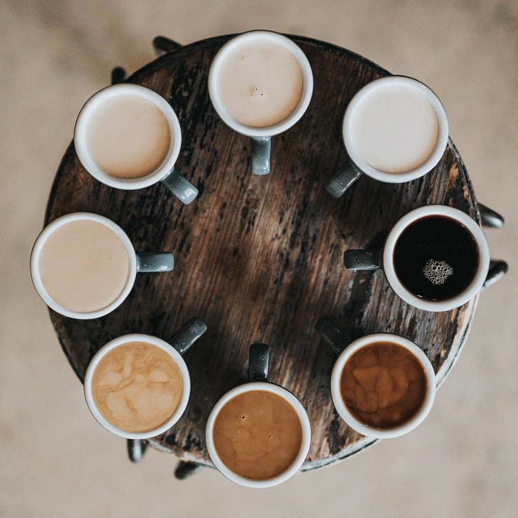

Programma
Clicca sulla giornata per scoprire il programma o scarica il flyer dell'evento. Ogni giornata prevede una conferenza aperta a tutti che sarà disponibile in live tramite il nostro canale YouTube e a seguire un workshop a numero chiuso accessibile tramite la piattaforma Microsoft Teams, organizzato da ogni relatore che è intervenuto nella conferenza. L'accesso al workshop è riservato esclusivamente agli utenti registrati per un massimo di 25 posti. Iscrizione tramite il link disponibile nella sezione Booking.
Le conferenze e i workshop saranno tenuti in italiano, ad eccezione degli interventi del Prof. Franz Fischer che saranno invece in inglese.
-

-
Silvio Peroni
10.00 - 10.30
Università di Bologna
OpenCitations e bibliometria. -
Angelo Ventriglia
10.30 - 11.00
FrancoAngeli Editore
I mestieri del libro nell'era digitale. -

Pausa
11.00 - 11.15
Breve pausa prima dell'inizio delle attività pratiche.
-

Workshop - Ricerca nelle DH
11.15 - 12.00
Attività pratica guidata da Silvio Peroni. Le specifiche saranno fornite durante l’attività.
-
Workshop - Editoria digitale
12.00 - 12.45
Attività pratica guidata da Angelo Ventriglia. Le specifiche saranno fornite durante l’attività.
-
Apertura dei lavori
9.30 - 10.00
Presentazione progetto "Digital WHOmanities" e introduzione alla giornata.
-
Claudio Tubertini
10.00 - 10.30
CLUEB Publishing Company
I mestieri del libro nell'era digitale. -
Francesca Di Donato
CANCELLATO
Net7
Cultural Heritage and Digital Humanities. -
Pausa
11.00 - 11.15
Breve pausa prima dell'inizio delle attività pratiche.
-
Workshop - Editoria digitale
11.15 - 12.00
Attività pratica guidata da Claudio Tubertini. Le specifiche saranno fornite durante l’attività.
-
Workshop - Tecnologie Web
CANCELLATO
Attività pratica guidata da Francesca Di Donato. Le specifiche saranno fornite durante l’attività.
-
Apertura dei lavori
9.30 - 10.00
Presentazione progetto "Digital WHOmanities" e introduzione alla giornata.
-
Giacomo Golinelli, Angelo La Gorga e Corrado Trione
10.00 - 10.30
Promemoria
Archiviare nell'era digitale. -
Franz Fischer
10.30 - 11.00
VeDPH
Presentazione del centro VeDPH. -
Pausa
11.00 - 11.15
Breve pausa prima dell'inizio delle attività pratiche.
-
Workshop - Biblioteche, archivi e musei
11.15 - 12.00
Attività pratica guidata da Giacomo Golinelli, Angelo La Gorga e Corrado Trione. Le specifiche saranno fornite durante l’attività.
-
Workshop - Ricerca nelle DH
12.00 - 12.45
Attività pratica guidata da Franz Fischer. Le specifiche saranno fornite durante l’attività.
-
Apertura dei lavori
9.30 - 9.45
Presentazione progetto "Digital WHOmanities" e introduzione alla giornata.
-
Laura Moro
9.45 - 10.00
MiBACT - Istituto centrale per la digitalizzazione del patrimonio culturale
Lo Stato della digitalizzazione. -
Claudio Leombroni e Klaus Kempf*
*L'intervento di Klaus Kempf è stato pre-registrato per l'occasione.
10.00 - 10.30
IBC - Istituto per i Beni Artistici Culturali Naturali ER
BSB - Bayerische Staatsbibliothek
Biblioteche, archivi e musei nell'era digitale. -
Andrea Bolioli
10.30 - 10.45
CELI - Language Technology
Data Science e Natural Language Processing. -
Conclusione
10.45 - 11.00
Chiusura del ciclo di conferenze.
-
Workshop - Linguistica computazionale
11.00 - 11.45
Attività pratica guidata da Andrea Bolioli e Alessio Bosca (CELI). Le specifiche saranno fornite durante l’attività.
-
Pausa
11.45 - 12.00
Breve pausa prima dell'inizio delle attività pratiche.
-
Workshop - Biblioteche, archivi e musei
12.00 - 12.45
Attività pratica guidata da Francesca Ricci (IBC). Le specifiche saranno fornite durante l’attività.